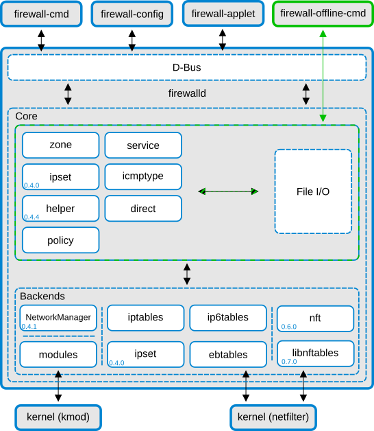

Firewalld¶
Firewalld is a firewall daemon. It is managed via the firewall-cmd command line utility.

Zones¶
Firewalld is logically divided into zone and the traffic flowing between them can be governed by policies
Firewalld follows some strict principles in regards to zones:
Traffic ingresses one and only one zone
Traffic egresses one and only one zone
A zone defines a level of trust
intra-zone (within the same zone) is allowed by default
inter-zone (zone to zone) is denied by default
To list the available zones, run:
firewall-cmd --get-zones
To list the currently active zones:
firealld-cmd --get-active-zones
To inspect a particular zone:
firewall-cmd --zone=public --list-all
firewall-cmd --list-all-zones
You can configure firewalld in /etc/firewalld
Creating services¶
To create a service and open a port, use the following commands:
sudo firewall-cmd --zone=public --add-service=http
sudo firewall-cmd --zone=public --add-service=http --permanent
A service is a configuration which contains some ports. In this case the service was already defined by the distribution.
sudo firewall-cmd --info-service=http
To see all the predefined services, use:
firewall-cmd --get-services
To create a custom service, run:
sudo firewall-cmd --permanent --new-service=myapp
sudo firewall-cmd --permanent --service=myapp --set-description="My Custom Enterprise App"
sudo firewall-cmd --permanent --service=myapp --add-port=8080/tcp
Verify your changes:
sudo firewall-cmd --zone=public --list-services
sudo firewall-cmd --zone=public --list-ports
Reload the firewall after making changes:
sudo firewall-cmd --reload
Rich rules¶
You can have more control on the firewall with rich rules.
For example. here is a rule to block an IP and log the attempts:
sudo firewall-cmd --permanent --add-rich-rule='rule family="ipv4" source address="203.0.113.5" drop'
Allow ssh, but if someone tries to connect more than 3 times per minute, stop listening to them:
sudo firewall-cmd --permanent --add-rich-rule='rule service name="ssh" nickname="stop_brute" limit value="3/m" accept'
Drop packets silently:
sudo firewall-cmd --permanent --add-rich-rule='rule family="ipv4" source address="192.0.2.1" drop'
IP-set¶
An IP set is a “bucket” of IP addresses, subnets or MAC addresses that firewalld treats as a single object.
Example:
sudo firewall-cmd --permanent --new-ipset=denylist --type=hash:net
firewall-cmd --permanent --ipset=denylist --add-entries-from-file=blocked_ips.txt
sudo firewall-cmd --permanent --zone=public --add-rich-rule='rule source ipset="denylist" drop'
sudo firewall-cmd --reload